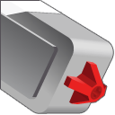
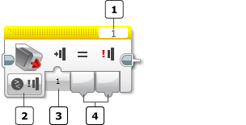
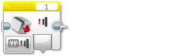
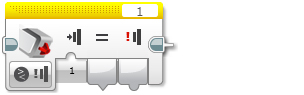

					<table cellpadding="0" cellspacing="0" border="0"><tbody><tr><td>
	
						<h1>触动传感器模块<a name="top"></a></h1>
		<div id="block_7" class="block blockHeader">
				<table cellspacing="0" cellpadding="0" border="0">
			<tbody><tr>
				<td valign="top" class="image"></td>
				<td valign="top" class="description"><div class="text-wrapper">触动传感器模块从触动传感器获取数据。可以测试是按压、松开还是碰撞了触动传感器，并获取逻辑（“真”或“伪”）输出。<br>
<br>
有关触动传感器工作原理、它提供的数据以及编程示例的更多信息，请参见<a href="./index.html?id=UsingSensors_Touch">使用触动传感器</a>。</div></td>
			</tr>
		</tbody></table>
			</div>
	<div id="block_224" class="block blockTip">
		<div class="title">提示和技巧</div>
		<div class="boxContent">
			<div class="description">触动传感器模块通过<a href="./index.html?id=DataWires">数据线</a>输出数据。有关无需数据线的其他使用触动传感器的方式，请参见<a href="./index.html?id=UsingSensors_Touch">使用触动传感器</a>。</div>
				</div>
	</div>
	<div id="block_226" class="block blockChaptor">
		<div class="title"><a name="ChooseTheSensorPortandMode" style="position:relative; top:-10px;"></a>选择传感器端口和模式</div>
		<div class="description"><br>
<br>
 端口选择器 <br>
 模式选择器<br>
 输入<br>
 输出<br>
<br>
<br>
使用模块顶部的<a href="./index.html?id=PortSelector">端口选择器</a>可确保传感器端口号（1、2、3 或 4）与触动传感器连接的 EV3 程序块上的端口匹配。<br>
<br>
使用模式选择器可为模块选择模式。可用<a href="./index.html?id=TouchSensor#InputsAndOutputs">输入和输出</a>会因模式而异。</div>
	</div>
	<div id="block_227" class="block blockChaptor">
		<div class="title"><a name="Modes" style="position:relative; top:-10px;"></a>模式</div>
		<div class="description"></div>
	</div>
	<div id="block_228" class="block blockMode">
		<div class="title"><a name="Mode_Measure" style="position:relative; top:-10px;"></a>测量 － 状态</div>
		<div class="description"><br>
<br>
“测量 － 状态”模式在<a href="./index.html?id=TouchSensor#State">状态</a>输出中输出触动传感器的状态。如果当前按压了触动传感器，则“状态”为“真”，否则为“伪”。</div>
			<div class="links">请参见<a href="./index.html?id=UsingSensors_Touch">使用触动传感器</a>中的编程示例 3。</div>
	</div>
	<div id="block_230" class="block blockMode">
		<div class="title"><a name="Mode_Compare" style="position:relative; top:-10px;"></a>比较 － 状态</div>
		<div class="description"><br>
<br>
在“比较 － 状态”模式中，可以选择在<a href="./index.html?id=TouchSensor#PressedReleasedorBumped">状态</a>输入中要测试的触动传感器的状态（松开、按压或碰撞）。所选状态的“真/伪”值在<a href="./index.html?id=TouchSensor#Result">比较结果</a>中输出。传感器的当前状态在<a href="./index.html?id=TouchSensor#Value">测量值</a>中输出。</div>
			<div class="links">有关不同状态的工作原理的信息，请参见<a href="./index.html?id=UsingSensors_Touch">使用触动传感器</a>。</div>
	</div>
	<div id="block_231" class="block blockChaptor">
		<div class="title"><a name="InputsAndOutputs" style="position:relative; top:-10px;"></a>输入与输出 <a name="Parameters" style="position:relative; top:-10px;"></a></div>
		<div class="description">可用于触动传感器模块的输入取决于所选模式。可以将输入值直接输入到模块中。或者，可以通过<a href="./index.html?id=DataWires">数据线</a>从其他编程模块的输出提供输入值。</div>
	</div>
	<div id="block_232" class="block blockTable ">
		<table class="blockTable">
		

			<tbody><tr>
<th>输入</th><th>类型</th><th>允许的值</th><th>备注</th>			</tr>
<tr><td>状态 <a name="PressedReleasedorBumped" style="position:relative; top:-10px;"></a></td><td>数字</td><td>0 － 2</td><td>要在“比较”模式中测试的状态。<br>
0 = 松开<br>
1 = 按压<br>
2 = 碰撞</td></tr>		</tbody></table>
	</div>
	<div id="block_233" class="block blockStep">
		<div class="title"></div>
		<div class="description">可用输出取决于所选模式。要使用某个输出，请使用<a href="./index.html?id=DataWires">数据线</a>将该输出连接到另一个编程模块。</div>
	</div>
	<div id="block_234" class="block blockTable ">
		<table class="blockTable">
		

			<tbody><tr>
<th>输出</th><th>类型</th><th>备注</th>			</tr>
<tr><td>状态 <a name="State" style="position:relative; top:-10px;"></a></td><td>逻辑</td><td>在“测量”模式中使用。<br>
如果按压了触动传感器，则为“真”，否则为“伪”。</td></tr><tr><td>比较结果 <a name="Result" style="position:relative; top:-10px;"></a></td><td>逻辑</td><td>“比较”模式中所选传感器状态的值。</td></tr><tr><td>测量值 <a name="Value" style="position:relative; top:-10px;"></a></td><td>数字</td><td>“比较”模式中的当前传感器状态。<br>
0 = 松开<br>
1 = 按压<br>
2 = 碰撞</td></tr>		</tbody></table>
	</div>
	
			<div id="quick">
				<div class="header"><a href="./index.html?id=TouchSensor#header">触动</a></div>
					<div class="quickText">快速链接</div>
					
					<ul>
	<li><a href="./index.html?id=TouchSensor#ChooseTheSensorPortandMode">选择传感器端口和模式</a></li><li><a href="./index.html?id=TouchSensor#Modes">模式</a></li><li><a href="./index.html?id=TouchSensor#InputsAndOutputs">输入与输出</a></li>					</ul>
			</div>
	
	</td></tr></tbody></table>